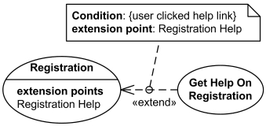
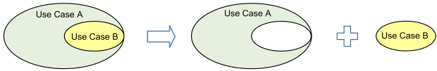
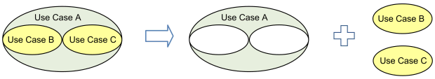
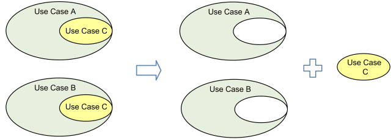
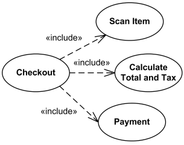
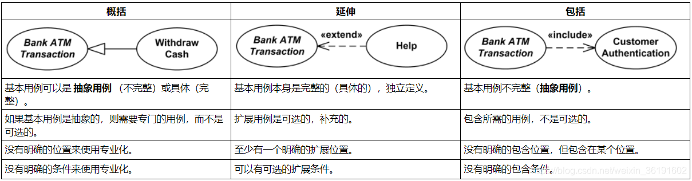

#定义
#拓展(Extend)
扩展关系是扩展用例的泛化关系继续基本用例的行为。扩展用例通过在概念上将附加动作序列插入基本用例序列来实现这一点。这允许扩展用例在基本用例中达到适当的扩展点并且满足扩展条件时继续基本用例的活动序列。当扩展用例活动序列完成时，基本用例继续。
扩展用例通常定义可选的行为，这些行为本身并不一定有意义。

注册用例本身就是完整且有意义的。它可以通过可选的 Get Help On Registration 用例进行扩展。拓展点为 Registration Help。
#包含(include)
包含的用例的执行类似于编程中的子程序调用或宏命令。包含用例取决于所包含的用例的添加，这是必需的而非可选的。

用例B从较大的用例A中提取到一个单独的用例中。

用例B和C从较大的用例A中提取到单独的用例中。

用例C是从用例A和B中提取出来的，两个用例都使用UML包含关系重用。

结帐用例包括几个用例 - 扫描项目，计算总额和税金以及付款
#区别
#用例之间的依赖关系
在拓展关系中，基本用例是不依赖拓展用例来完成自身功能的。
在包含关系中，基本用例必须依赖包含的用例才能完成自身的功能。
#基本用例完整性
在拓展关系中，基本用例是完整的；而在包含关系中，基本用例是不完整的，是抽象用例。
#通过拓展点区别
拓展关系是具有拓展点的，如果在两个用例之间可以找到一个合理的拓展点，那么可以认为两个用例之间是具有拓展关系的。
#通过目的区别
包含关系旨在重用由另一个用例建模的行为，而拓展关系旨在为现有用例添加部分以及为可选系统服务建模。
Include = 重用功能
Extends = 新功能和/或可选功能
#用例关系的比较

#参考
Stack Overflow: What's is the difference between include and extend in use case diagram?